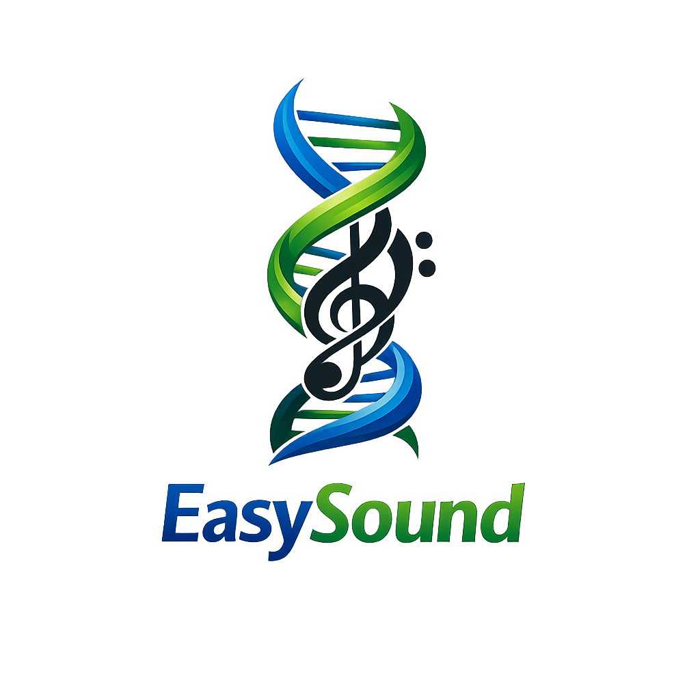

EasySound to biblioteka wygładzająca dźwięk, aby był łatwiejszy do słuchania i rozumienia. Zawiera kilka trybów przetwarzania sygnału, w tym redukcję pików, wygładzanie oraz poprawę zrozumiałości mowy.
Projekt powstał z myślą o osobach wrażliwych na dźwięki oraz tych, które mają trudności ze zrozumieniem mowy.
Repozytorium: EasySound na GitHubie